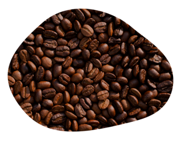

Café totalmente puro e 100% natural.

O MELHOR DA AGRICULTURA FAMILIAR!
Cultivado com amor e consciência, o Café Excelsior busca levar a mehor experiência para o seu
café da manhã com grãos selecionados e sem uso de aditivos, Excelsior é o café mais puro feito com amor e dedicação.